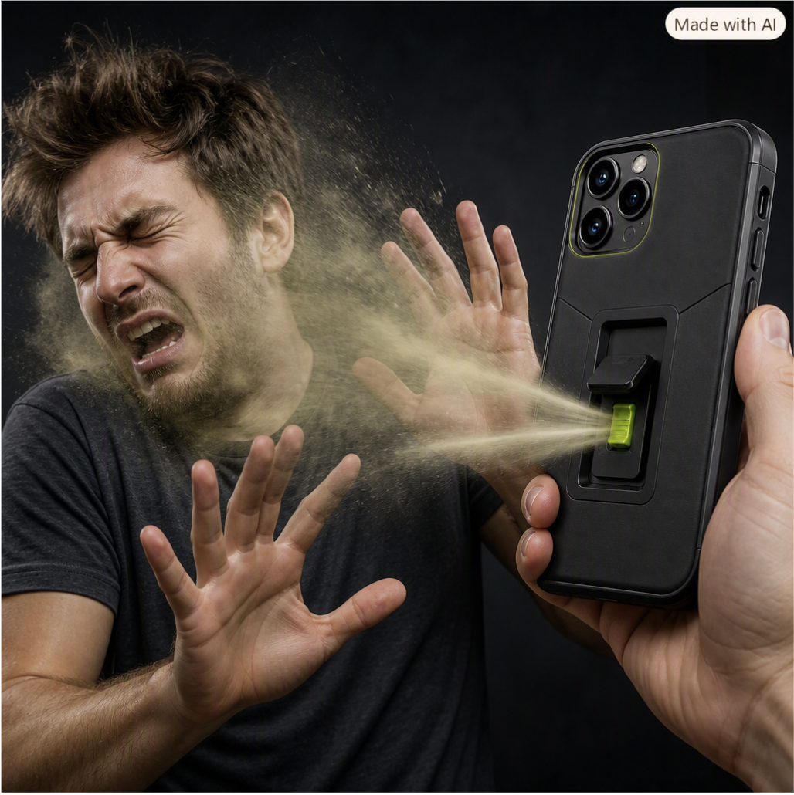

Having been given a phone as the object with a format of (smelly, distasteful, and repugnant) me and my group formulated to the Foffphone. A regular phone but with a smelly catch. With the press of a button on the back, it releases fart spray at creeps who may get in your way. With the help of generative AI, we created the image above to better showcase it in action.